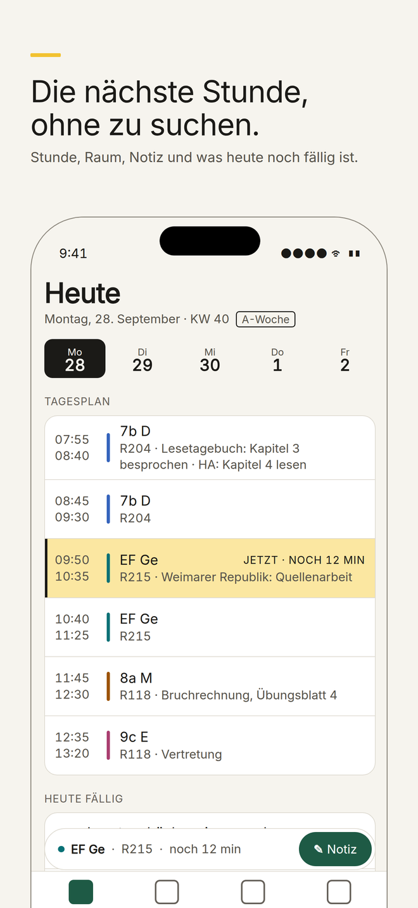
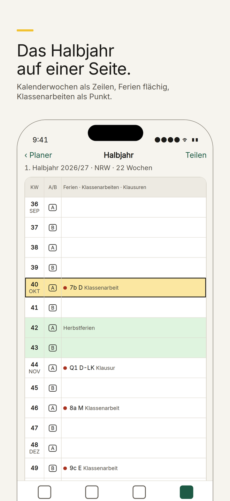
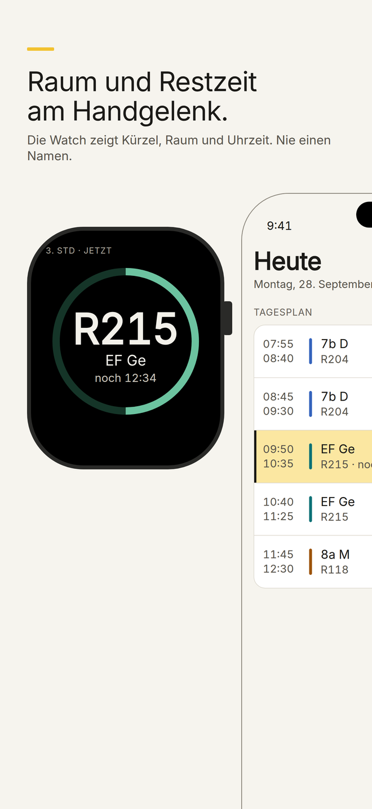
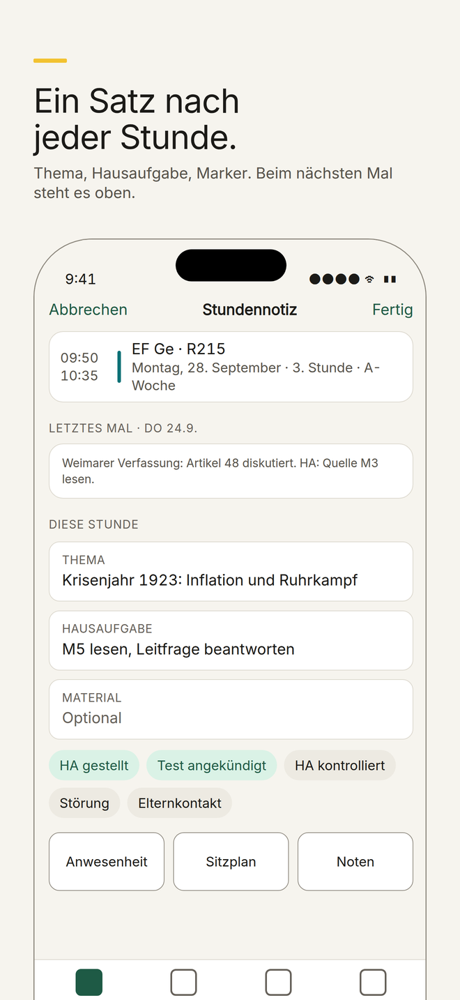

Pauker
Die nächste Stunde, ohne zu suchen.
Der Lehrerkalender für iPhone und Apple Watch: Stundenplan, Termine, Stundennotizen, Klassenlisten und Noten an einem Ort.
Im App Store laden – PaukerPauker ist der Lehrerkalender für das iPhone und die Apple Watch, gebaut für die Minuten zwischen zwei Stunden. Stundenplan, Notizen, Termine, Klassenlisten und Noten liegen an einem Ort und folgen der Ordnung des gedruckten Planers: eine Zeile pro Stunde, die Woche auf einer Doppelseite, das Halbjahr auf einer Seite.
Im App Store laden Für iPhone und Apple Watch.



Im Alltag
Den Stundenplan trägst du einmal ein oder übernimmst ihn aus der Kalenderdatei deines Stundenplanportals; A- und B-Wochen, Doppelstunden und Aufsichten sind vorgesehen. Nach der Stunde genügt ein Satz: Thema, Hausaufgabe, ein Marker wie „HA gestellt“. Anwesenheit erfasst du mit einem Tipp pro Person, Noten als Ziffern, mit Tendenz oder als Punkte der Oberstufe. Für eine Klassenarbeit hinterlegst du deinen Notenschlüssel und tippst nur die Rohpunkte ein.
Für den Dienst-PC schreibt Pauker echte Dateien: Klassenlisten und Noten als Excel-Mappe, Termine als Kalenderdatei für Outlook, Listen zum Abhaken als PDF. Vor jedem Export fragt die App, ob Klarnamen mitgehen; voreingestellt sind Kürzel.
Für die Schulleitung
Wer Daten von Schülerinnen und Schülern auf einem privaten Gerät führt, braucht in vielen Bundesländern die Genehmigung der Schulleitung. Pauker ist dafür gebaut: keine Übertragung an Server, Datenbank im geschützten Speicher der App und vom iCloud-Backup ausgenommen, App-Sperre mit Face ID, Kürzel-Modus vor der Klasse. Das Datenschutz-Center in der App erklärt, welche Angaben hineingehören, erinnert an Löschfristen und erstellt eine Vorlage für die Verfahrensbeschreibung.
Was Pauker nicht tut
Es verschickt keine Nachrichten an Eltern und nimmt keine pädagogische Entscheidung ab. Es ist ein Kalender, der zuhört, und kein System, das mitredet.
Ratgeber
Pauker – Lehrerkalender ist eine App für iPhone und Apple Watch von einem unabhängigen Entwickler, die Stundenplan, Termine, Stundennotizen, Klassenlisten und Noten an einem Ort führt, ohne Konto und ohne Server. Rund um diesen Alltag beantworten die Ratgeber Fragen aus der Schule, jeweils mit Quellen.
Alle Ratgeber · Häufige Fragen zu Pauker
Hilfe
Fragen, Fehler, Ideen aus dem Schulalltag: Support und häufige Fragen. Gebaut von einem Einzelentwickler in Nordrhein-Westfalen, mit Dank an die Lehrkräfte, die ihren Papierkalender zum Vergleich auf den Tisch gelegt haben.